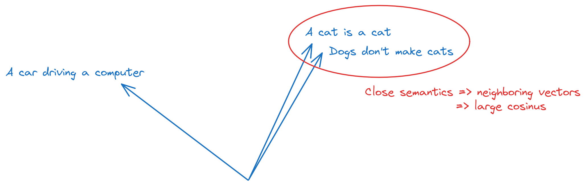
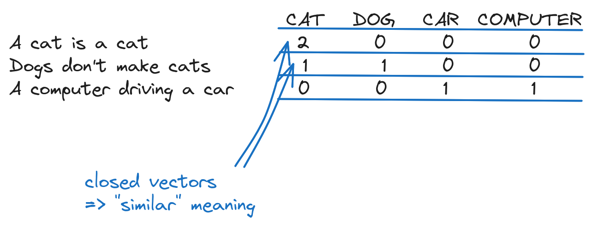
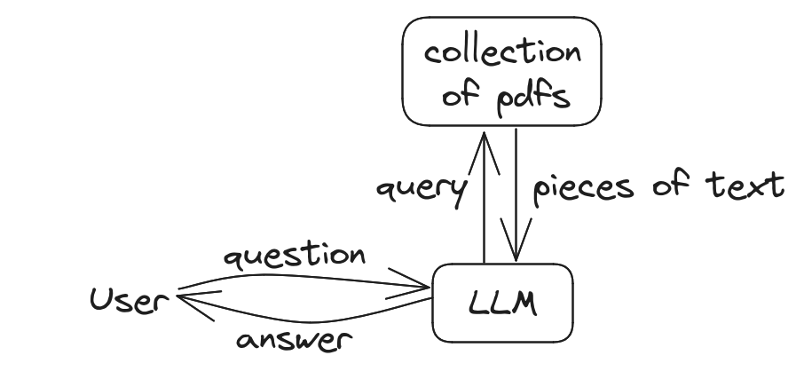
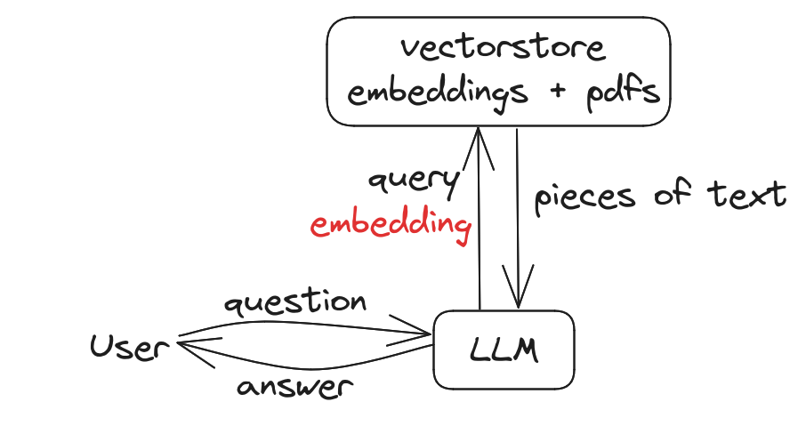
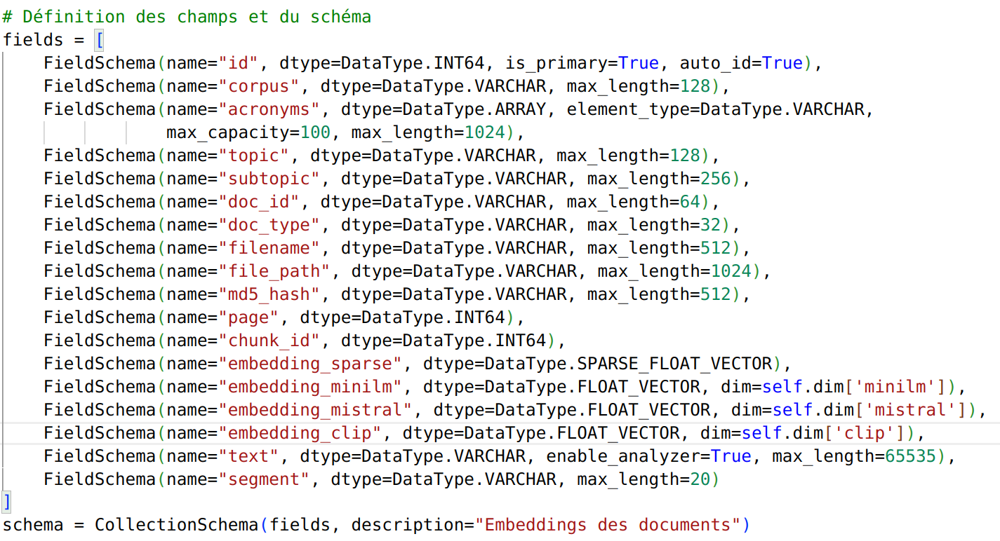

TP3. Systèmes RAG et bases vectorielles¶
Durée : 2 h.
Objectifs¶
- Comprendre comment représenter un texte par un vecteur numérique pour raisonner sur sa sémantique, pas seulement sur ses mots.
- Mesurer la proximité entre deux textes par une similarité cosinus.
- Construire un premier pipeline de RAG (Retrieval-Augmented Generation) : aller chercher un contexte pertinent avant de répondre, plutôt que de tout demander au modèle.
- Indexer un corpus de documents dans une base vectorielle (FAISS) et l'interroger.
Prérequis¶
Le TP1 et le TP2 : appeler un modèle
Mistral, composer une chaîne. Bibliothèques supplémentaires pour ce TP :
scikit-learn, sentence-transformers, langchain-community, langchain-huggingface,
langchain-text-splitters, faiss-cpu, pypdf.
Ressources¶
- Documentation LangChain, RAG.
- sentence-transformers.
- Le QCM d'auto-évaluation de ce TP, à faire après la séance.
Ce TP s'exécute sur votre machine, pas dans le navigateur
Comme aux TP précédents, les blocs de code appellent des bibliothèques et parfois des API distantes ; ils sont donnés à titre d'exemple, à recopier dans votre environnement local (voir la mise en route).
Étape 1. Pourquoi représenter un texte par un vecteur (10 min)¶
Comparer deux textes mot à mot ne capture pas leur sens : « voiture » et « automobile » n'ont aucune lettre en commun, et pourtant ils désignent presque la même chose. Un embedding résout ce problème en transformant un texte en un vecteur de nombres, de telle sorte que deux textes proches par le sens deviennent deux vecteurs proches dans l'espace.

C'est cette propriété, la proximité sémantique devient une proximité géométrique, qui rend possible tout ce que fait ce TP : chercher un document pertinent, détecter un doublon, ou fournir à un modèle de langage un contexte utile avant de répondre.
Exercice 1.1 : trois usages de la proximité sémantique
Citez trois applications concrètes où comparer des textes par leur sens, plutôt que par leurs mots exacts, change le résultat : un moteur de recherche, un système de recommandation, une détection de doublons, un tri de courriels...
Résultat attendu : trois exemples, chacun justifiant pourquoi une simple comparaison de mots (« est-ce que le mot X apparaît dans les deux textes ? ») échouerait là où la sémantique réussit.
Piste de réponse
Un moteur de recherche interne à une entreprise, interrogé avec « comment annuler un abonnement », doit remonter une page titrée « résiliation de contrat » même si aucun mot n'est commun aux deux phrases. Une comparaison mot à mot renverrait zéro résultat ; une comparaison par embeddings les rapproche parce qu'« annuler un abonnement » et « résiliation de contrat » désignent la même intention.
Étape 2. La représentation la plus simple : le sac de mots (15 min)¶
Avant les embeddings modernes, la méthode la plus simple pour transformer un texte en vecteur consiste à compter les mots qu'il contient, sans tenir compte de leur ordre : le sac de mots (bag of words).
from sklearn.feature_extraction.text import CountVectorizer
corpus = [
"Demonstration text, first document",
"Demo text, and here's a second document.",
"And finally, this is the third document.",
]
vectorizer = CountVectorizer()
X = vectorizer.fit_transform(corpus)
print("Vocabulaire :", vectorizer.get_feature_names_out())
print("Matrice :\n", X.toarray())

Chaque ligne de la matrice est le vecteur d'un document, chaque colonne compte les occurrences d'un mot du vocabulaire. C'est un embedding au sens large, un texte devenu vecteur, mais un embedding aveugle au sens : « je n'aime pas ce film » et « j'aime ce film » partagent presque tous leurs mots.
Exercice 2.1 : les limites du sac de mots
Ajoutez un quatrième document contenant un synonyme d'un mot déjà présent dans le
corpus (par exemple "A further, extra document appears here." pour faire écho à
"document", ou tout autre exemple de votre choix avec un vrai synonyme). Le sac de
mots rapproche-t-il ce document des autres autant qu'il le devrait ?
Résultat attendu : le vocabulaire s'enrichit d'une nouvelle colonne pour chaque mot inédit, mais un synonyme qui n'est pas orthographiquement identique à un mot déjà présent n'est relié à rien : le sac de mots ne sait pas que deux mots différents peuvent signifier la même chose.
Corrigé
corpus_etendu = corpus + ["A further, extra document appears here."]
X2 = vectorizer.fit_transform(corpus_etendu)
print(vectorizer.get_feature_names_out())
print(X2.toarray())
« further » et « extra » n'ont aucun lien avec « second » ou « third » dans cette représentation, alors qu'ils en sont sémantiquement proches. C'est exactement la limite que les embeddings de l'étape suivante corrigent : ils sont entraînés sur de grands volumes de texte, et apprennent que des mots employés dans des contextes similaires doivent recevoir des vecteurs proches.
Étape 3. Des embeddings qui comprennent le contexte (20 min)¶
La bibliothèque sentence-transformers fournit des modèles entraînés pour produire des
vecteurs qui capturent le sens d'une phrase entière, pas seulement le compte de ses mots :
from sentence_transformers import SentenceTransformer
import numpy as np
phrases = [
"This is an example sentence.",
"Each sentence is converted into a fixed-sized vector.",
"The weather is nice today.",
]
modele = SentenceTransformer("sentence-transformers/all-MiniLM-L6-v2", device="cpu")
vecteurs = modele.encode(phrases)
for phrase, vecteur in zip(phrases, vecteurs):
print(f"{phrase!r} -> vecteur de taille {len(vecteur)}, débute par {vecteur[:3]}")
def similarite_cosinus(a, b):
return np.dot(a, b) / (np.linalg.norm(a) * np.linalg.norm(b))
print("phrase 1 vs phrase 2 :", similarite_cosinus(vecteurs[0], vecteurs[1]))
print("phrase 1 vs phrase 3 :", similarite_cosinus(vecteurs[0], vecteurs[2]))
La similarité cosinus mesure l'angle entre deux vecteurs plutôt que leur distance brute :
elle vaut 1 pour deux vecteurs identiques en direction, 0 pour deux vecteurs sans
rapport, et elle ne dépend pas de la longueur des textes comparés.
Exercice 3.1 : la phrase la plus proche
Écrivez une fonction plus_proche(requete, phrases, modele) qui renvoie, parmi une
liste de phrases, celle dont l'embedding a la plus grande similarité cosinus avec
l'embedding de requete.
Résultat attendu : avec requete = "How big is the vector?" et les phrases
ci-dessus, la fonction renvoie la deuxième phrase (celle qui parle de la taille du
vecteur), pas la première ni la troisième.
Corrigé
def plus_proche(requete, phrases, modele):
vecteur_requete = modele.encode([requete])[0]
vecteurs_phrases = modele.encode(phrases)
scores = [similarite_cosinus(vecteur_requete, v) for v in vecteurs_phrases]
indice = max(range(len(phrases)), key=lambda i: scores[i])
return phrases[indice], scores[indice]
print(plus_proche("How big is the vector?", phrases, modele))
C'est exactement le mécanisme de recherche derrière un système de RAG : au lieu de comparer la question à chaque document mot à mot, on compare leurs embeddings, et on récupère celui dont le score est le plus haut. L'étape 6 fait la même chose à plus grande échelle, avec une base de documents plutôt que trois phrases.
Pour comparer : les embeddings distants (OpenAI)
Les fournisseurs d'API proposent aussi des modèles d'embeddings, généralement plus coûteux mais parfois plus précis que les modèles locaux. Le principe reste identique, seul le calcul se fait à distance :
from openai import OpenAI
client = OpenAI()
def embedding_distant(texte, modele="text-embedding-3-large"):
return client.embeddings.create(input=[texte], model=modele).data[0].embedding
Si vous testez cette variante, fixez un quota dans le tableau de bord du fournisseur :
contrairement aux modèles sentence-transformers, chaque appel est facturé.
Étape 4. Un premier pipeline RAG, à la main (20 min)¶
Un système RAG répond en deux temps : d'abord retrouver un contexte pertinent (retrieval), ensuite le donner au modèle pour qu'il rédige sa réponse en s'appuyant dessus (generation), plutôt que sur sa seule mémoire.

from dotenv import load_dotenv
from langchain_core.prompts import ChatPromptTemplate
from langchain_mistralai.chat_models import ChatMistralAI
load_dotenv()
prompt = ChatPromptTemplate.from_messages([
("system",
"Tu es un expert du genre Mycobacterium. Réponds UNIQUEMENT à partir du contexte "
"fourni. Si le contexte ne contient pas la réponse, dis explicitement que tu ne "
"sais pas plutôt que d'inventer."),
("human", "Question : {question}\n\nContexte : {contexte}"),
])
llm = ChatMistralAI(model="mistral-large-latest", temperature=0)
chain = prompt | llm
contexte = (
"To sum up, we have presented a case of Mycobacterium kansasii monoarthritis "
"in an immunocompetent patient, successfully treated by a combination of "
"antibiotics and surgical debridement."
)
reponse = chain.invoke({"question": "What is Mycobacterium kansasii?", "contexte": contexte})
print(reponse.content)
Exercice 4.1 : un contexte qui ne répond pas à la question
Posez une question dont la réponse ne figure pas dans le contexte donné (par exemple « Quel est le taux de mortalité de cette infection ? »). Le modèle respecte-t-il la consigne « dis que tu ne sais pas » du message système ?
Résultat attendu : dans la plupart des essais, une réponse indiquant que l'information n'est pas dans le contexte fourni. Ce n'est pas une garantie absolue, seulement l'effet d'une consigne bien formulée : un modèle de langage peut toujours céder à la tentation de compléter avec ce qu'il « sait » par ailleurs, ce qu'on appelle une hallucination, précisément ce que le RAG cherche à limiter.
Corrigé
reponse = chain.invoke({
"question": "Quel est le taux de mortalité de cette infection ?",
"contexte": contexte,
})
print(reponse.content)
Retenez la nuance : le RAG réduit le risque d'hallucination en ancrant la réponse dans un texte vérifiable, il ne l'élimine pas. C'est pourquoi un système de RAG en production affiche presque toujours ses sources, pour qu'un humain puisse vérifier que la réponse est bien tirée du contexte fourni et non inventée.
Étape 5. Indexer un corpus avec une base vectorielle (30 min)¶
Comparer une question à trois phrases à la main ne passe pas à l'échelle d'un vrai corpus. Une base vectorielle comme FAISS indexe des milliers de documents et retrouve les plus proches d'une requête en un temps raisonnable.

import warnings
from textwrap import shorten, fill
from langchain_community.document_loaders import PyPDFLoader
from langchain_community.vectorstores import FAISS
from langchain_huggingface import HuggingFaceEmbeddings
warnings.simplefilter("ignore")
# Remplacez par le chemin d'un PDF de votre choix (article, cours, rapport).
loader = PyPDFLoader("mon_document.pdf")
pages = loader.load_and_split()
embeddings = HuggingFaceEmbeddings(model_name="sentence-transformers/all-MiniLM-L6-v2")
index = FAISS.from_documents(pages, embeddings)
resultats = index.similarity_search("un sujet abordé par le document", k=2)
for doc in resultats:
print(f"page {doc.metadata['page']} : {fill(shorten(doc.page_content, 500), 80)}\n")
load_and_split() découpe le PDF en pages, chaque page devient un document indexé avec
son propre embedding. similarity_search fait exactement ce que l'exercice 3.1 faisait à
la main, sur un corpus de taille arbitraire.
Exercice 5.1 : une chaîne RAG complète, du document à la réponse
Combinez les étapes 4 et 5 : récupérez les deux passages les plus proches de la
question avec similarity_search, concaténez-les en un seul contexte, puis
envoyez-les au modèle comme à l'exercice 4.1.
Résultat attendu : une réponse qui s'appuie visiblement sur le contenu du PDF indexé, différente de ce que le modèle répondrait à la même question sans contexte.
Corrigé
resultats = index.similarity_search("un sujet abordé par le document", k=2)
contexte = "\n\n".join(doc.page_content for doc in resultats)
reponse = chain.invoke({"question": "un sujet abordé par le document", "contexte": contexte})
print(reponse.content)
C'est la boucle complète d'un système de RAG : indexer une fois, puis à chaque question, retrouver les passages pertinents et les injecter dans le prompt. Le modèle ne voit jamais le document entier, ce qui serait souvent impossible (les documents dépassent la taille maximale d'un prompt), seulement les extraits que la recherche a jugés pertinents.
Exercice 5.2 : découper avant d'indexer
Une page entière est parfois trop grosse ou trop hétérogène pour un bon embedding.
RecursiveCharacterTextSplitter découpe un texte en fragments plus petits et
cohérents avant indexation :
from langchain_text_splitters import RecursiveCharacterTextSplitter
decoupeur = RecursiveCharacterTextSplitter(chunk_size=500, chunk_overlap=100)
fragments = decoupeur.split_documents(pages)
print(f"{len(pages)} pages découpées en {len(fragments)} fragments")
Réindexez avec fragments au lieu de pages. Le nombre de résultats retrouvés par
similarity_search change-t-il la nature des passages remontés ?
Résultat attendu : plus de fragments que de pages (chaque page peut se scinder en plusieurs morceaux de 500 caractères), et des passages plus ciblés en retour d'une recherche, au prix d'un contexte parfois plus fragmenté.
Corrigé
index_fragments = FAISS.from_documents(fragments, embeddings)
resultats = index_fragments.similarity_search("un sujet abordé par le document", k=2)
for doc in resultats:
print(fill(shorten(doc.page_content, 300), 80), "\n")
chunk_overlap=100 fait chevaucher les fragments de cent caractères, pour éviter
qu'une phrase importante soit coupée exactement à la frontière de deux morceaux et
perde son sens dans chacun des deux. Il n'y a pas de réglage universel : un
chunk_size trop petit fragmente le sens, trop grand redonne le problème de
départ (une unité trop hétérogène pour un bon embedding).
Pour aller plus loin¶
- D'autres chargeurs de documents existent pour le Markdown, le HTML, les bases SQL ou même une vidéo YouTube transcrite automatiquement.
- D'autres bases vectorielles que FAISS (Chroma, Milvus, Weaviate) ajoutent le filtrage par métadonnées ou une gestion distribuée, utiles à partir d'un certain volume.

- Évaluer un système RAG avec des métriques dédiées (précision et rappel de la recherche, pas seulement qualité de la réponse finale).
- Combiner ce TP avec le TP2 : contraindre la forme de la réponse finale avec un schéma Pydantic, en plus de contraindre son contenu avec le contexte récupéré.
Ce qu'il faut retenir¶
Un embedding transforme un texte en vecteur tel que deux textes proches par le sens deviennent deux vecteurs proches, ce qu'un simple comptage de mots (sac de mots) ne fait pas. La similarité cosinus mesure cette proximité. Un système RAG répond en deux temps : retrouver un contexte pertinent par similarité vectorielle, puis le donner au modèle pour qu'il réponde en s'appuyant dessus plutôt que sur sa seule mémoire. Une base vectorielle comme FAISS fait cette recherche à l'échelle d'un vrai corpus, éventuellement découpé en fragments avant indexation. Et le RAG réduit le risque d'hallucination sans l'annuler : un modèle peut toujours ignorer un contexte qui ne contient pas la réponse.
Auto-évaluation¶
Avant de passer au TP4, vous devez pouvoir, sans regarder le corrigé :
- expliquer pourquoi un sac de mots ne capture pas la sémantique ;
- calculer une similarité cosinus entre deux vecteurs, et dire ce qu'elle mesure ;
- décrire les deux temps d'un pipeline RAG, retrieval puis generation ;
- indexer une liste de documents dans FAISS et faire une recherche par similarité ;
- expliquer pourquoi découper un long texte en fragments peut améliorer une recherche.